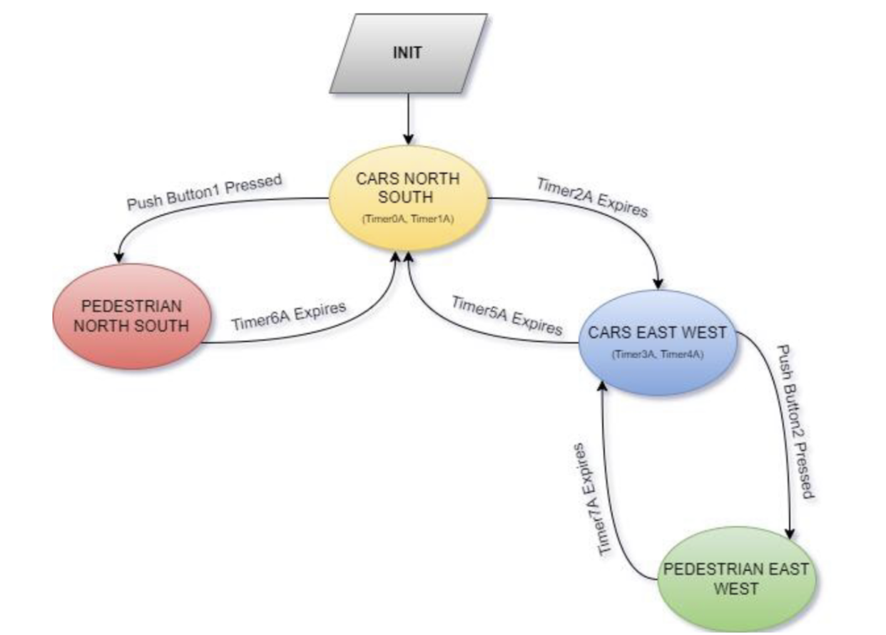

Traffic Light Control System
Using timers and interrupts in the cortex M4 and tivaware based to develop a traffic light system
Tools used: IAR Systems, TivaC (arm cortex m4 based)
Documentation can be found here